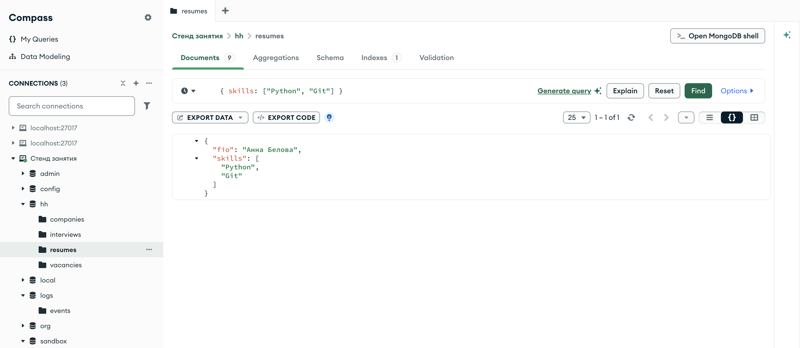
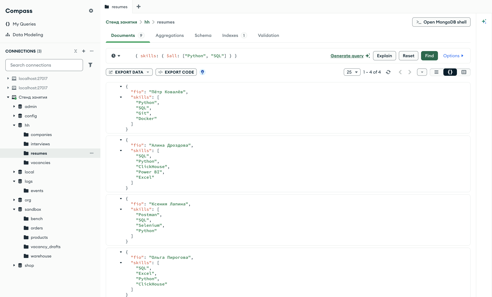
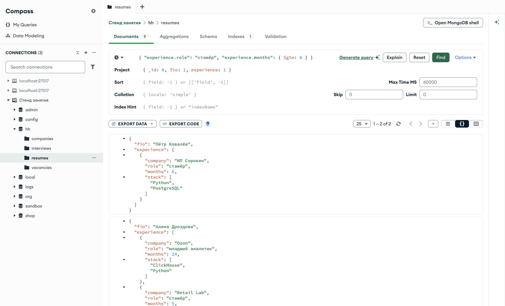
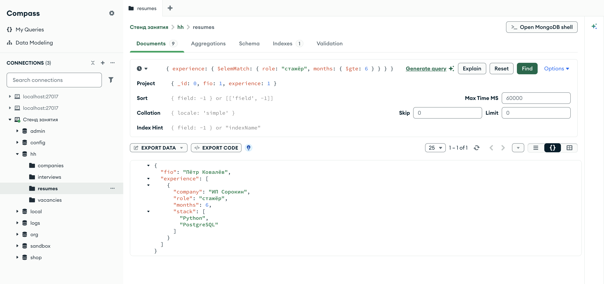
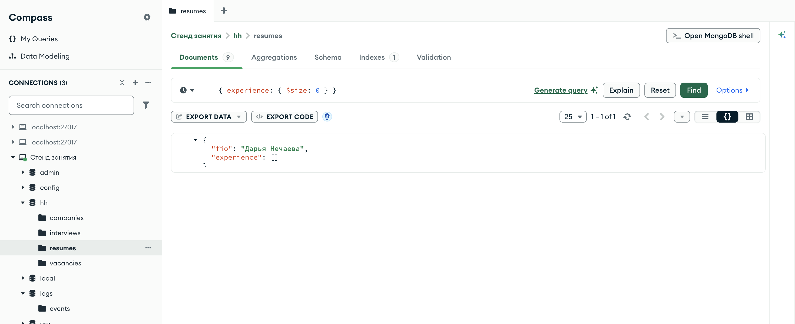
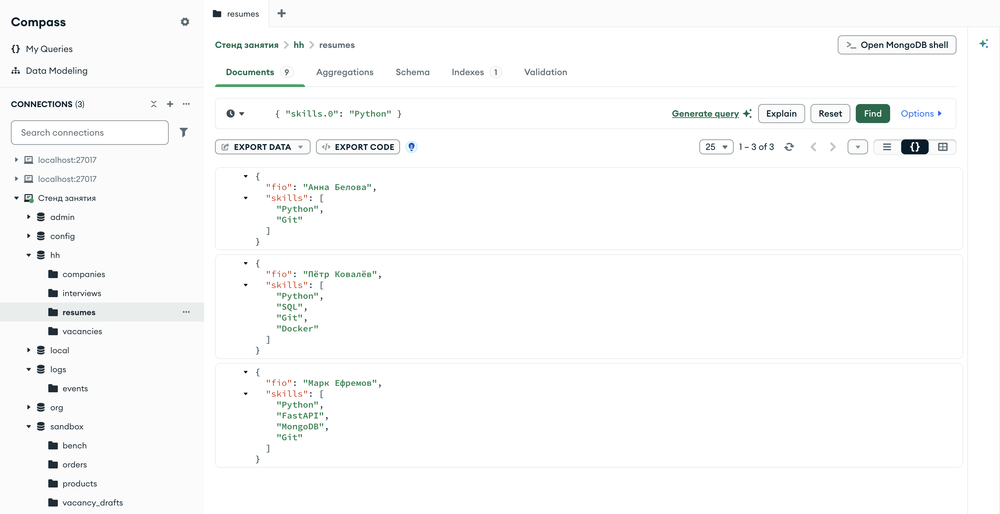

Справочник по MongoDB · модуль 2 · язык фильтров
2.6
Массивы:
$all, $elemMatch, $size
Условие на поле-массив сервер проверяет на каждом элементе — это правило из главы 2.1 работало во всех следующих главах. Здесь разобраны три оператора, которые смотрят на массив иначе: $all требует, чтобы в массиве были все значения из списка, $elemMatch — чтобы один элемент выполнил несколько условий сразу, $size проверяет длину массива. Отдельно — как обратиться к элементу по его номеру.
- Категория
- Язык запросов
- Уровень
- Начальный
- Связанные темы
- Фильтр и точечная нотация, списки значений
$in, тип значения$type - Зачем это знать
- Отбирать документы по содержимому массивов строк и массивов документов
Как запускать примеры этой главы
mongodb-glava-2.6-python.zip, 60 КБmongodb-glava-2.6-ruby.zip, 60 КБmongodb-glava-2.6-go.zip, 65 КБmongodb-glava-2.6-cpp.zip, 63 КБ — все примеры главы готовыми программами, учебные базы и стенд в Docker. В README.md — запуск в Docker, если Compass нет или он не подключается, и на установленном сервере с Compass, а также что должна напечатать каждая программа.lessons/ch2_6.py — пример вставляется в конец файлаlessons/ch2_6.rb — пример вставляется в конец файлаlessons/ch2_6.go — пример внутрь скобок в конце main, функции и типы — выше mainlessons/ch2_6.cpp — пример внутрь скобок в конце main, функции — выше maincd lessons, затем python ch2_6.pycd lessons, затем python3 ch2_6.py · в Docker: docker compose run --rm python lessons/ch2_6.pycd lessons, затем ruby ch2_6.rb · в Docker: docker compose run --rm ruby lessons/ch2_6.rbcd lessons, затем go run ch2_6.go · в Docker: docker compose run --rm go lessons/ch2_6.gocd lessons, затем g++ -std=c++17 ch2_6.cpp -o prog $(pkg-config --cflags --libs libmongocxx1) && ./prog · в Docker: docker compose run --rm cpp lessons/ch2_6.cpp§1Что уже известно о массивах
В коллекции резюме два массива. skills — массив строк, навыки соискателя. experience — массив документов, по одному на место работы: компания, роль, число месяцев и стек. По предыдущим главам с массивами работают три правила.
Первое: равенство с одиночным значением проверяется на каждом элементе, и достаточно одного совпадения (глава 2.1 §6). Второе: $in по массиву требует, чтобы хотя бы один элемент совпал хотя бы с одним значением списка (глава 2.3 §3). Третье: если в фильтре стоит массив, он сравнивается с полем целиком — те же элементы в том же порядке.
print("среди навыков Python: ", resumes.count_documents({"skills": "Python"})) print("навыки ровно [Python, Git]:", resumes.count_documents({"skills": ["Python", "Git"]})) print("навыки ровно [Git, Python]:", resumes.count_documents({"skills": ["Git", "Python"]}))
std::cout << "среди навыков Python: " << resumes.count_documents(make_document(kvp("skills", "Python"))) << std::endl; std::cout << "навыки ровно [Python, Git]: " << resumes.count_documents(make_document(kvp("skills", make_array("Python", "Git")))) << std::endl; std::cout << "навыки ровно [Git, Python]: " << resumes.count_documents(make_document(kvp("skills", make_array("Git", "Python")))) << std::endl;
element, _ := resumes.CountDocuments(ctx, bson.D{{Key: "skills", Value: "Python"}}) celikom, _ := resumes.CountDocuments(ctx, bson.D{{Key: "skills", Value: bson.A{"Python", "Git"}}}) poryadok, _ := resumes.CountDocuments(ctx, bson.D{{Key: "skills", Value: bson.A{"Git", "Python"}}}) fmt.Println("среди навыков Python: ", element) fmt.Println("навыки ровно [Python, Git]:", celikom) fmt.Println("навыки ровно [Git, Python]:", poryadok)
puts "среди навыков Python: " + resumes.count_documents({ "skills" => "Python" }).to_s puts "навыки ровно [Python, Git]: " + resumes.count_documents({ "skills" => ["Python", "Git"] }).to_s puts "навыки ровно [Git, Python]: " + resumes.count_documents({ "skills" => ["Git", "Python"] }).to_s
среди навыков Python: 6 навыки ровно [Python, Git]: 1 навыки ровно [Git, Python]: 0
среди навыков Python: 6 навыки ровно [Python, Git]: 1 навыки ровно [Git, Python]: 0
среди навыков Python: 6 навыки ровно [Python, Git]: 1 навыки ровно [Git, Python]: 0
среди навыков Python: 6 навыки ровно [Python, Git]: 1 навыки ровно [Git, Python]: 0
Python есть в шести резюме. Массив ["Python", "Git"] совпал с навыками Анны Беловой — у неё ровно эти два навыка в этом порядке. Массив из тех же строк в обратном порядке не совпал ни с одним резюме. Сравнение массива целиком нужно редко: обычно важен состав массива, а порядок элементов роли не играет.

hh.resumes, фильтр { skills: ["Python", "Git"] } — массив целикомСчётчик 1 – 1 of 1. Массив навыков Анны Беловой раскрыт: в нём ровно два элемента, "Python" и "Git", в том же порядке, что в фильтре. У остальных резюме Python тоже есть, но массив длиннее, и целиком он с фильтром не совпал.
§2$all: все значения из списка
Оператор $all принимает список и отбирает документы, в массиве которых есть все значения из этого списка. Порядок значений и остальные элементы массива на результат не влияют. Это условие «у соискателя есть и Python, и SQL», в отличие от $in — «есть Python или SQL».
print("$all [Python, SQL]:", resumes.count_documents({"skills": {"$all": ["Python", "SQL"]}})) print("$in [Python, SQL]: ", resumes.count_documents({"skills": {"$in": ["Python", "SQL"]}})) for doc in resumes.find({"skills": {"$all": ["Python", "SQL"]}}, {"_id": 0, "fio": 1, "skills": 1}): print(doc)
std::cout << "$all [Python, SQL]: " << resumes.count_documents(make_document(kvp("skills", make_document(kvp("$all", make_array("Python", "SQL")))))) << std::endl; std::cout << "$in [Python, SQL]: " << resumes.count_documents(make_document(kvp("skills", make_document(kvp("$in", make_array("Python", "SQL")))))) << std::endl; mongocxx::options::find options; options.projection(make_document(kvp("_id", 0), kvp("fio", 1), kvp("skills", 1))); for (const auto& doc : resumes.find(make_document(kvp("skills", make_document(kvp("$all", make_array("Python", "SQL"))))), options)) { std::cout << bsoncxx::to_json(doc, bsoncxx::ExtendedJsonMode::k_relaxed) << std::endl; }
vse, _ := resumes.CountDocuments(ctx, bson.D{{Key: "skills", Value: bson.D{{Key: "$all", Value: bson.A{"Python", "SQL"}}}}}) lyuboy, _ := resumes.CountDocuments(ctx, bson.D{{Key: "skills", Value: bson.D{{Key: "$in", Value: bson.A{"Python", "SQL"}}}}}) fmt.Println("$all [Python, SQL]:", vse) fmt.Println("$in [Python, SQL]: ", lyuboy) cursor, _ := resumes.Find(ctx, bson.D{{Key: "skills", Value: bson.D{{Key: "$all", Value: bson.A{"Python", "SQL"}}}}}, options.Find().SetProjection(bson.D{{Key: "_id", Value: 0}, {Key: "fio", Value: 1}, {Key: "skills", Value: 1}})) for cursor.Next(ctx) { var doc bson.D cursor.Decode(&doc) out, _ := bson.MarshalExtJSON(doc, false, false) fmt.Println(string(out)) }
puts "$all [Python, SQL]: " + resumes.count_documents({ "skills" => { "$all" => ["Python", "SQL"] } }).to_s puts "$in [Python, SQL]: " + resumes.count_documents({ "skills" => { "$in" => ["Python", "SQL"] } }).to_s resumes.find({ "skills" => { "$all" => ["Python", "SQL"] } }, projection: { "_id" => 0, "fio" => 1, "skills" => 1 }) .each { |doc| puts doc.inspect }
$all [Python, SQL]: 4
$in [Python, SQL]: 6
{'fio': 'Пётр Ковалёв', 'skills': ['Python', 'SQL', 'Git', 'Docker']}
{'fio': 'Алина Дроздова', 'skills': ['SQL', 'Python', 'ClickHouse', 'Power BI', 'Excel']}
{'fio': 'Ксения Лапина', 'skills': ['Postman', 'SQL', 'Selenium', 'Python']}
{'fio': 'Ольга Пирогова', 'skills': ['SQL', 'Excel', 'Python', 'ClickHouse']}
$all [Python, SQL]: 4
$in [Python, SQL]: 6
{ "fio" : "Пётр Ковалёв", "skills" : [ "Python", "SQL", "Git", "Docker" ] }
{ "fio" : "Алина Дроздова", "skills" : [ "SQL", "Python", "ClickHouse", "Power BI", "Excel" ] }
{ "fio" : "Ксения Лапина", "skills" : [ "Postman", "SQL", "Selenium", "Python" ] }
{ "fio" : "Ольга Пирогова", "skills" : [ "SQL", "Excel", "Python", "ClickHouse" ] }
$all [Python, SQL]: 4
$in [Python, SQL]: 6
{"fio":"Пётр Ковалёв","skills":["Python","SQL","Git","Docker"]}
{"fio":"Алина Дроздова","skills":["SQL","Python","ClickHouse","Power BI","Excel"]}
{"fio":"Ксения Лапина","skills":["Postman","SQL","Selenium","Python"]}
{"fio":"Ольга Пирогова","skills":["SQL","Excel","Python","ClickHouse"]}
$all [Python, SQL]: 4
$in [Python, SQL]: 6
{"fio"=>"Пётр Ковалёв", "skills"=>["Python", "SQL", "Git", "Docker"]}
{"fio"=>"Алина Дроздова", "skills"=>["SQL", "Python", "ClickHouse", "Power BI", "Excel"]}
{"fio"=>"Ксения Лапина", "skills"=>["Postman", "SQL", "Selenium", "Python"]}
{"fio"=>"Ольга Пирогова", "skills"=>["SQL", "Excel", "Python", "ClickHouse"]}
Оба навыка есть в четырёх резюме, хотя бы один — в шести. В выводе видно, что порядок в массивах разный: у Петра Ковалёва Python стоит первым, у остальных трёх — после SQL. Для $all это не имеет значения.

hh.resumes, фильтр { skills: { $all: ["Python", "SQL"] } }Во всех четырёх раскрытых массивах есть и "Python", и "SQL", но на разных местах и вместе с другими навыками. Для $all важен только состав.
§3Два условия на массив документов
Точечная нотация работает и с массивом документов: "experience.role" означает «поле role у любого элемента массива». Когда условий на массив два, каждое проверяется независимо, и выполнить их могут разные элементы.
Задача: найти соискателей, которые были стажёрами не меньше шести месяцев. Если записать её двумя условиями через точку, фильтр прочитается как «среди мест работы есть место с ролью „стажёр“, и среди мест работы есть место длиной от шести месяцев».
filtr = {"experience.role": "стажёр",
"experience.months": {"$gte": 6}}
for doc in resumes.find(filtr, {"_id": 0, "fio": 1, "experience": 1}):
print(doc)
auto filtr = make_document( kvp("experience.role", "стажёр"), kvp("experience.months", make_document(kvp("$gte", 6)))); mongocxx::options::find options; options.projection(make_document(kvp("_id", 0), kvp("fio", 1), kvp("experience", 1))); for (const auto& doc : resumes.find(filtr.view(), options)) { std::cout << bsoncxx::to_json(doc, bsoncxx::ExtendedJsonMode::k_relaxed) << std::endl; }
filtr := bson.D{
{Key: "experience.role", Value: "стажёр"},
{Key: "experience.months", Value: bson.D{{Key: "$gte", Value: 6}}}}
cursor, _ := resumes.Find(ctx, filtr,
options.Find().SetProjection(bson.D{{Key: "_id", Value: 0}, {Key: "fio", Value: 1}, {Key: "experience", Value: 1}}))
for cursor.Next(ctx) {
var doc bson.D
cursor.Decode(&doc)
out, _ := bson.MarshalExtJSON(doc, false, false)
fmt.Println(string(out))
}
filtr = { "experience.role" => "стажёр",
"experience.months" => { "$gte" => 6 } }
resumes.find(filtr, projection: { "_id" => 0, "fio" => 1, "experience" => 1 })
.each { |doc| puts doc.inspect }
{'fio': 'Пётр Ковалёв', 'experience': [{'company': 'ИП Сорокин', 'role': 'стажёр', 'months': 6, 'stack': ['Python', 'PostgreSQL']}]}
{'fio': 'Алина Дроздова', 'experience': [{'company': 'Ozon', 'role': 'младший аналитик', 'months': 14, 'stack': ['ClickHouse', 'Python']}, {'company': 'Retail Lab', 'role': 'стажёр', 'months': 5, 'stack': ['SQL']}]}
{ "fio" : "Пётр Ковалёв", "experience" : [ { "company" : "ИП Сорокин", "role" : "стажёр", "months" : 6, "stack" : [ "Python", "PostgreSQL" ] } ] }
{ "fio" : "Алина Дроздова", "experience" : [ { "company" : "Ozon", "role" : "младший аналитик", "months" : 14, "stack" : [ "ClickHouse", "Python" ] }, { "company" : "Retail Lab", "role" : "стажёр", "months" : 5, "stack" : [ "SQL" ] } ] }
{"fio":"Пётр Ковалёв","experience":[{"company":"ИП Сорокин","role":"стажёр","months":6,"stack":["Python","PostgreSQL"]}]}
{"fio":"Алина Дроздова","experience":[{"company":"Ozon","role":"младший аналитик","months":14,"stack":["ClickHouse","Python"]},{"company":"Retail Lab","role":"стажёр","months":5,"stack":["SQL"]}]}
{"fio"=>"Пётр Ковалёв", "experience"=>[{"company"=>"ИП Сорокин", "role"=>"стажёр", "months"=>6, "stack"=>["Python", "PostgreSQL"]}]}
{"fio"=>"Алина Дроздова", "experience"=>[{"company"=>"Ozon", "role"=>"младший аналитик", "months"=>14, "stack"=>["ClickHouse", "Python"]}, {"company"=>"Retail Lab", "role"=>"стажёр", "months"=>5, "stack"=>["SQL"]}]}
Нашлись двое. У Петра Ковалёва одно место работы: стажёр, 6 месяцев — оба условия выполнены одним элементом. У Алины Дроздовой два места: младший аналитик в Ozon на 14 месяцев и стажёр в Retail Lab на 5. Роль «стажёр» дал второй элемент, срок от шести месяцев — первый. Под задачу она не подходит: стажёром она была пять месяцев.

Счётчик 1 – 2 of 2. Чтобы массивы поместились в кадр, в поле Project задана проекция { _id: 0, fio: 1, experience: 1 }. Во втором документе раскрыт массив experience: в первом элементе role — «младший аналитик», months — 14, во втором role — «стажёр», months — 5. Условие на роль выполнено вторым элементом, условие на срок — первым.
§4$elemMatch: один элемент — все условия
Оператор $elemMatch принимает документ условий и отбирает документы, в массиве которых есть хотя бы один элемент, выполняющий все эти условия сразу. Имена полей внутри $elemMatch пишутся от элемента массива: role и months, без experience. впереди.
filtr = {"experience": {"$elemMatch": {"role": "стажёр", "months": {"$gte": 6}}}}
for doc in resumes.find(filtr, {"_id": 0, "fio": 1, "experience": 1}):
print(doc)
auto filtr = make_document(kvp("experience", make_document(kvp("$elemMatch", make_document( kvp("role", "стажёр"), kvp("months", make_document(kvp("$gte", 6)))))))); mongocxx::options::find options; options.projection(make_document(kvp("_id", 0), kvp("fio", 1), kvp("experience", 1))); for (const auto& doc : resumes.find(filtr.view(), options)) { std::cout << bsoncxx::to_json(doc, bsoncxx::ExtendedJsonMode::k_relaxed) << std::endl; }
filtr := bson.D{{Key: "experience", Value: bson.D{{Key: "$elemMatch", Value: bson.D{
{Key: "role", Value: "стажёр"},
{Key: "months", Value: bson.D{{Key: "$gte", Value: 6}}}}}}}}
cursor, _ := resumes.Find(ctx, filtr,
options.Find().SetProjection(bson.D{{Key: "_id", Value: 0}, {Key: "fio", Value: 1}, {Key: "experience", Value: 1}}))
for cursor.Next(ctx) {
var doc bson.D
cursor.Decode(&doc)
out, _ := bson.MarshalExtJSON(doc, false, false)
fmt.Println(string(out))
}
filtr = { "experience" => { "$elemMatch" => { "role" => "стажёр", "months" => { "$gte" => 6 } } } }
resumes.find(filtr, projection: { "_id" => 0, "fio" => 1, "experience" => 1 })
.each { |doc| puts doc.inspect }
{'fio': 'Пётр Ковалёв', 'experience': [{'company': 'ИП Сорокин', 'role': 'стажёр', 'months': 6, 'stack': ['Python', 'PostgreSQL']}]}
{ "fio" : "Пётр Ковалёв", "experience" : [ { "company" : "ИП Сорокин", "role" : "стажёр", "months" : 6, "stack" : [ "Python", "PostgreSQL" ] } ] }
{"fio":"Пётр Ковалёв","experience":[{"company":"ИП Сорокин","role":"стажёр","months":6,"stack":["Python","PostgreSQL"]}]}
{"fio"=>"Пётр Ковалёв", "experience"=>[{"company"=>"ИП Сорокин", "role"=>"стажёр", "months"=>6, "stack"=>["Python", "PostgreSQL"]}]}
Остался один Пётр Ковалёв: только у него роль «стажёр» и срок от шести месяцев записаны в одном элементе. Разница между §3 и §4 — одно резюме: без $elemMatch каждое условие ищет в массиве свой подходящий элемент, с $elemMatch все условия проверяются на одном и том же элементе.

$elemMatch — одно резюмеСчётчик 1 – 1 of 1. У Петра Ковалёва в массиве один элемент: role — «стажёр», months — 6. Оба условия выполнены им одним.
Если условие на массив одно, $elemMatch не нужен: {"experience.role": "стажёр"} и {"experience": {"$elemMatch": {"role": "стажёр"}}} находят одни и те же документы. Оператор нужен, когда условий два и больше и они должны относиться к одному элементу.
§5$size: длина массива
Оператор $size отбирает документы, в которых массив содержит ровно заданное число элементов. Значение — только целое число: диапазон $size не принимает.
print("навыков ровно 4:", resumes.count_documents({"skills": {"$size": 4}})) print("навыков ровно 5:", resumes.count_documents({"skills": {"$size": 5}})) print("мест работы 0: ", resumes.count_documents({"experience": {"$size": 0}})) print("мест работы 2: ", resumes.count_documents({"experience": {"$size": 2}}))
std::cout << "навыков ровно 4: " << resumes.count_documents(make_document(kvp("skills", make_document(kvp("$size", 4))))) << std::endl; std::cout << "навыков ровно 5: " << resumes.count_documents(make_document(kvp("skills", make_document(kvp("$size", 5))))) << std::endl; std::cout << "мест работы 0: " << resumes.count_documents(make_document(kvp("experience", make_document(kvp("$size", 0))))) << std::endl; std::cout << "мест работы 2: " << resumes.count_documents(make_document(kvp("experience", make_document(kvp("$size", 2))))) << std::endl;
chetyre, _ := resumes.CountDocuments(ctx, bson.D{{Key: "skills", Value: bson.D{{Key: "$size", Value: 4}}}}) pyat, _ := resumes.CountDocuments(ctx, bson.D{{Key: "skills", Value: bson.D{{Key: "$size", Value: 5}}}}) nol, _ := resumes.CountDocuments(ctx, bson.D{{Key: "experience", Value: bson.D{{Key: "$size", Value: 0}}}}) dva, _ := resumes.CountDocuments(ctx, bson.D{{Key: "experience", Value: bson.D{{Key: "$size", Value: 2}}}}) fmt.Println("навыков ровно 4:", chetyre) fmt.Println("навыков ровно 5:", pyat) fmt.Println("мест работы 0: ", nol) fmt.Println("мест работы 2: ", dva)
puts "навыков ровно 4: " + resumes.count_documents({ "skills" => { "$size" => 4 } }).to_s puts "навыков ровно 5: " + resumes.count_documents({ "skills" => { "$size" => 5 } }).to_s puts "мест работы 0: " + resumes.count_documents({ "experience" => { "$size" => 0 } }).to_s puts "мест работы 2: " + resumes.count_documents({ "experience" => { "$size" => 2 } }).to_s
навыков ровно 4: 6 навыков ровно 5: 2 мест работы 0: 1 мест работы 2: 2
навыков ровно 4: 6 навыков ровно 5: 2 мест работы 0: 1 мест работы 2: 2
навыков ровно 4: 6 навыков ровно 5: 2 мест работы 0: 1 мест работы 2: 2
навыков ровно 4: 6 навыков ровно 5: 2 мест работы 0: 1 мест работы 2: 2
Четыре навыка указаны в шести резюме, пять — в двух. Пустой массив опыта — у одного резюме, Дарьи Нечаевой: $size: 0 находит пустой массив. Резюме Анны Беловой в эту строку не попало — поля experience в нём нет, а у отсутствующего поля длины нет. Два места работы — у Алины Дроздовой и Тимура Валиева.

hh.resumes, фильтр { experience: { $size: 0 } } — пустой массив опытаСчётчик 1 – 1 of 1. У Дарьи Нечаевой поле experience есть, и Compass показывает его как [] — пустой массив. Резюме без поля experience в выдаче нет.
§6Элемент по номеру
К элементу массива можно обратиться по номеру через точку, как к полю вложенного документа. Нумерация начинается с нуля: "skills.0" — первый навык, "skills.3" — четвёртый. Для массива документов номер ставится перед именем поля: "experience.0.months" — срок на первом месте работы.
Номер элемента решает и задачу, которую $size не решает, — «в массиве не меньше N элементов». Если в массиве есть элемент с номером 3, значит, элементов не меньше четырёх.
print("первый навык Python:", resumes.count_documents({"skills.0": "Python"})) print("навыков не меньше 4:", resumes.count_documents({"skills.3": {"$exists": True}})) print("навыков не меньше 5:", resumes.count_documents({"skills.4": {"$exists": True}})) for doc in resumes.find({"skills.0": "Python"}, {"_id": 0, "fio": 1, "skills": 1}): print(doc)
std::cout << "первый навык Python: " << resumes.count_documents(make_document(kvp("skills.0", "Python"))) << std::endl; std::cout << "навыков не меньше 4: " << resumes.count_documents(make_document(kvp("skills.3", make_document(kvp("$exists", true))))) << std::endl; std::cout << "навыков не меньше 5: " << resumes.count_documents(make_document(kvp("skills.4", make_document(kvp("$exists", true))))) << std::endl; mongocxx::options::find options; options.projection(make_document(kvp("_id", 0), kvp("fio", 1), kvp("skills", 1))); for (const auto& doc : resumes.find(make_document(kvp("skills.0", "Python")), options)) { std::cout << bsoncxx::to_json(doc, bsoncxx::ExtendedJsonMode::k_relaxed) << std::endl; }
pervyy, _ := resumes.CountDocuments(ctx, bson.D{{Key: "skills.0", Value: "Python"}}) neMenshe4, _ := resumes.CountDocuments(ctx, bson.D{{Key: "skills.3", Value: bson.D{{Key: "$exists", Value: true}}}}) neMenshe5, _ := resumes.CountDocuments(ctx, bson.D{{Key: "skills.4", Value: bson.D{{Key: "$exists", Value: true}}}}) fmt.Println("первый навык Python:", pervyy) fmt.Println("навыков не меньше 4:", neMenshe4) fmt.Println("навыков не меньше 5:", neMenshe5) cursor, _ := resumes.Find(ctx, bson.D{{Key: "skills.0", Value: "Python"}}, options.Find().SetProjection(bson.D{{Key: "_id", Value: 0}, {Key: "fio", Value: 1}, {Key: "skills", Value: 1}})) for cursor.Next(ctx) { var doc bson.D cursor.Decode(&doc) out, _ := bson.MarshalExtJSON(doc, false, false) fmt.Println(string(out)) }
puts "первый навык Python: " + resumes.count_documents({ "skills.0" => "Python" }).to_s puts "навыков не меньше 4: " + resumes.count_documents({ "skills.3" => { "$exists" => true } }).to_s puts "навыков не меньше 5: " + resumes.count_documents({ "skills.4" => { "$exists" => true } }).to_s resumes.find({ "skills.0" => "Python" }, projection: { "_id" => 0, "fio" => 1, "skills" => 1 }) .each { |doc| puts doc.inspect }
первый навык Python: 3
навыков не меньше 4: 8
навыков не меньше 5: 2
{'fio': 'Анна Белова', 'skills': ['Python', 'Git']}
{'fio': 'Пётр Ковалёв', 'skills': ['Python', 'SQL', 'Git', 'Docker']}
{'fio': 'Марк Ефремов', 'skills': ['Python', 'FastAPI', 'MongoDB', 'Git']}
первый навык Python: 3
навыков не меньше 4: 8
навыков не меньше 5: 2
{ "fio" : "Анна Белова", "skills" : [ "Python", "Git" ] }
{ "fio" : "Пётр Ковалёв", "skills" : [ "Python", "SQL", "Git", "Docker" ] }
{ "fio" : "Марк Ефремов", "skills" : [ "Python", "FastAPI", "MongoDB", "Git" ] }
первый навык Python: 3
навыков не меньше 4: 8
навыков не меньше 5: 2
{"fio":"Анна Белова","skills":["Python","Git"]}
{"fio":"Пётр Ковалёв","skills":["Python","SQL","Git","Docker"]}
{"fio":"Марк Ефремов","skills":["Python","FastAPI","MongoDB","Git"]}
первый навык Python: 3
навыков не меньше 4: 8
навыков не меньше 5: 2
{"fio"=>"Анна Белова", "skills"=>["Python", "Git"]}
{"fio"=>"Пётр Ковалёв", "skills"=>["Python", "SQL", "Git", "Docker"]}
{"fio"=>"Марк Ефремов", "skills"=>["Python", "FastAPI", "MongoDB", "Git"]}
Python стоит первым в навыках у трёх соискателей, и вывод это подтверждает. Навыков не меньше четырёх — у восьми резюме из девяти: четырёх или пяти. Не меньше пяти — у двух, это те же два резюме, что нашёл $size: 5 в §5.

hh.resumes, фильтр { "skills.0": "Python" } — Python на первом местеВо всех трёх раскрытых массивах "Python" стоит первым элементом. Имя "skills.0" в поле фильтра взято в кавычки из-за точки.
§7Массивы в Compass
Кадры в разделах выше сняты в Compass на тех же запросах, что и примеры. Условия на массивы в поле фильтра пишутся так же, как в коде: $all и $in — со списком в квадратных скобках, $elemMatch — с документом условий. Имя с номером элемента или с точкой, "skills.0", "experience.role", берут в кавычки. Раскрыть массив в списке документов можно треугольником слева от имени поля.
§8Частые ошибки
| Что написано | Что происходит | Как правильно |
|---|---|---|
{"skills": ["Python", "SQL"]} | Пусто: массив в фильтре сравнивается с полем целиком, вместе с порядком | {"$all": ["Python", "SQL"]} |
{"experience.role": "стажёр", "experience.months": {"$gte": 6}} | Находит документы, где условия выполнены разными элементами массива | {"$elemMatch": {"role": "стажёр", "months": {"$gte": 6}}} |
{"experience": {"$elemMatch": {"experience.role": "стажёр"}}} | Пусто: внутри $elemMatch имена полей пишутся от элемента, без имени массива | {"$elemMatch": {"role": "стажёр"}} |
{"skills": {"$size": {"$gte": 4}}} | Ошибка сервера: Failed to parse $size. Expected a number | {"skills.3": {"$exists": True}} |
{"experience": {"$size": 0}} | Не находит документы, где поля нет совсем | {"experience.0": {"$exists": False}} |
| Что написано | Что происходит | Как правильно |
|---|---|---|
make_document(kvp("skills", make_array("Python", "SQL"))) | Пусто: массив в фильтре сравнивается с полем целиком, вместе с порядком | make_document(kvp("$all", make_array("Python", "SQL"))) |
make_document(kvp("experience.role", "стажёр"), kvp("experience.months", make_document(kvp("$gte", 6)))) | Находит документы, где условия выполнены разными элементами массива | make_document(kvp("$elemMatch", make_document(kvp("role", "стажёр"), kvp("months", make_document(kvp("$gte", 6)))))) |
make_document(kvp("experience", make_document(kvp("$elemMatch", make_document(kvp("experience.role", "стажёр")))))) | Пусто: внутри $elemMatch имена полей пишутся от элемента, без имени массива | make_document(kvp("$elemMatch", make_document(kvp("role", "стажёр")))) |
make_document(kvp("skills", make_document(kvp("$size", make_document(kvp("$gte", 4)))))) | Ошибка сервера: Failed to parse $size. Expected a number | make_document(kvp("skills.3", make_document(kvp("$exists", true)))) |
make_document(kvp("experience", make_document(kvp("$size", 0)))) | Не находит документы, где поля нет совсем | make_document(kvp("experience.0", make_document(kvp("$exists", false)))) |
| Что написано | Что происходит | Как правильно |
|---|---|---|
bson.D{{Key: "skills", Value: bson.A{"Python", "SQL"}}} | Пусто: массив в фильтре сравнивается с полем целиком, вместе с порядком | bson.D{{Key: "$all", Value: bson.A{"Python", "SQL"}}} |
bson.D{{Key: "experience.role", Value: "стажёр"}, {Key: "experience.months", Value: bson.D{{Key: "$gte", Value: 6}}}} | Находит документы, где условия выполнены разными элементами массива | bson.D{{Key: "$elemMatch", Value: bson.D{{Key: "role", Value: "стажёр"}, {Key: "months", Value: bson.D{{Key: "$gte", Value: 6}}}}}} |
bson.D{{Key: "experience", Value: bson.D{{Key: "$elemMatch", Value: bson.D{{Key: "experience.role", Value: "стажёр"}}}}}} | Пусто: внутри $elemMatch имена полей пишутся от элемента, без имени массива | bson.D{{Key: "$elemMatch", Value: bson.D{{Key: "role", Value: "стажёр"}}}} |
bson.D{{Key: "skills", Value: bson.D{{Key: "$size", Value: bson.D{{Key: "$gte", Value: 4}}}}}} | Ошибка сервера: Failed to parse $size. Expected a number | bson.D{{Key: "skills.3", Value: bson.D{{Key: "$exists", Value: true}}}} |
bson.D{{Key: "experience", Value: bson.D{{Key: "$size", Value: 0}}}} | Не находит документы, где поля нет совсем | bson.D{{Key: "experience.0", Value: bson.D{{Key: "$exists", Value: false}}}} |
| Что написано | Что происходит | Как правильно |
|---|---|---|
{ "skills" => ["Python", "SQL"] } | Пусто: массив в фильтре сравнивается с полем целиком, вместе с порядком | { "$all" => ["Python", "SQL"] } |
{ "experience.role" => "стажёр", "experience.months" => { "$gte" => 6 } } | Находит документы, где условия выполнены разными элементами массива | { "$elemMatch" => { "role" => "стажёр", "months" => { "$gte" => 6 } } } |
{ "experience" => { "$elemMatch" => { "experience.role" => "стажёр" } } } | Пусто: внутри $elemMatch имена полей пишутся от элемента, без имени массива | { "$elemMatch" => { "role" => "стажёр" } } |
{ "skills" => { "$size" => { "$gte" => 4 } } } | Ошибка сервера: Failed to parse $size. Expected a number | { "skills.3" => { "$exists" => true } } |
{ "experience" => { "$size" => 0 } } | Не находит документы, где поля нет совсем | { "experience.0" => { "$exists" => false } } |
§9Проверьте себя
Чем {"skills": {"$all": ["Python", "SQL"]}} отличается от {"skills": ["Python", "SQL"]}?
$all отбирает резюме, где среди навыков есть и Python, и SQL, в любом порядке и вместе с другими навыками. Массив без оператора сравнивается с полем целиком: навыков должно быть ровно два, Python первым. В учебной базе первый фильтр находит четыре резюме, второй — ни одного.
Почему фильтр {"experience.role": "стажёр", "experience.months": {"$gte": 6}} нашёл резюме, где стажировка длилась пять месяцев?
Условия на массив проверяются независимо: роль «стажёр» дало одно место работы, срок от шести месяцев — другое. Чтобы оба условия относились к одному месту работы, их помещают в $elemMatch.
Как записать внутри $elemMatch условие на поле role элементов массива experience?
Именем поля элемента: {"experience": {"$elemMatch": {"role": "стажёр"}}}. Запись "experience.role" внутри $elemMatch ищет в элементе поле experience, которого там нет, и результат будет пустым.
Как найти резюме, где навыков пять и больше?
Через номер элемента: {"skills.4": {"$exists": true}}. Если в массиве есть элемент с номером 4, элементов не меньше пяти. $size принимает только точное число.
Попадёт ли в результат {"experience": {"$size": 0}} резюме без поля experience?
Нет. $size проверяет длину массива, а у отсутствующего поля длины нет. Пустой массив и отсутствующее поле вместе находит условие {"experience.0": {"$exists": false}}: первого элемента нет ни в том, ни в другом случае.
§10Шпаргалка
{"skills": {"$all": ["Python", "SQL"]}}
{"experience": {"$elemMatch": {"role": "стажёр", "months": {"$gte": 6}}}}
{"skills": {"$size": 4}}
{"skills.3": {"$exists": True}}
{"skills.0": "Python"}
{"experience.0": {"$exists": False}}
make_document(kvp("skills", make_document(kvp("$all", make_array("Python", "SQL")))))
make_document(kvp("experience", make_document(kvp("$elemMatch", make_document(kvp("role", "стажёр"), kvp("months", make_document(kvp("$gte", 6))))))))
make_document(kvp("skills", make_document(kvp("$size", 4))))
make_document(kvp("skills.3", make_document(kvp("$exists", true))))
make_document(kvp("skills.0", "Python"))
make_document(kvp("experience.0", make_document(kvp("$exists", false))))
bson.D{{Key: "skills", Value: bson.D{{Key: "$all", Value: bson.A{"Python", "SQL"}}}}}
bson.D{{Key: "experience", Value: bson.D{{Key: "$elemMatch", Value: bson.D{{Key: "role", Value: "стажёр"}, {Key: "months", Value: bson.D{{Key: "$gte", Value: 6}}}}}}}}
bson.D{{Key: "skills", Value: bson.D{{Key: "$size", Value: 4}}}}
bson.D{{Key: "skills.3", Value: bson.D{{Key: "$exists", Value: true}}}}
bson.D{{Key: "skills.0", Value: "Python"}}
bson.D{{Key: "experience.0", Value: bson.D{{Key: "$exists", Value: false}}}}
{ "skills" => { "$all" => ["Python", "SQL"] } }
{ "experience" => { "$elemMatch" => { "role" => "стажёр", "months" => { "$gte" => 6 } } } }
{ "skills" => { "$size" => 4 } }
{ "skills.3" => { "$exists" => true } }
{ "skills.0" => "Python" }
{ "experience.0" => { "$exists" => false } }
Итог главы
Равенство и $in по массиву требуют хотя бы одного совпавшего элемента, массив в фильтре сравнивается с полем целиком. $all требует, чтобы в массиве были все значения из списка, в любом порядке. Несколько условий на массив документов проверяются независимо и могут выполняться разными элементами; $elemMatch требует, чтобы все условия выполнил один элемент, и имена полей внутри него пишутся от элемента. $size проверяет точную длину массива, а условие «не меньше N элементов» записывается через номер элемента: "поле.N-1" с $exists. Следующая глава — о поиске по части строки: $regex и $options.